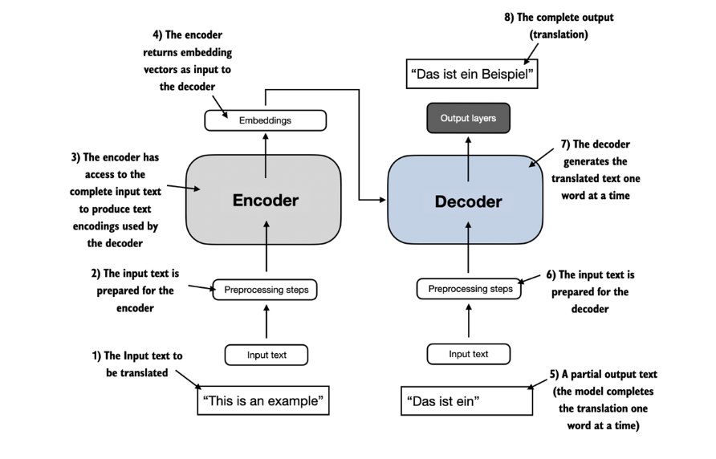
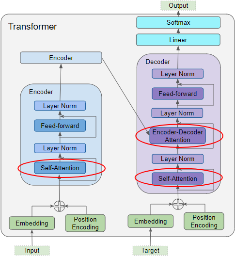
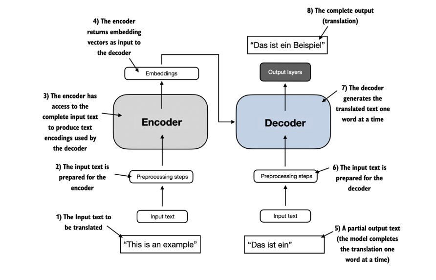
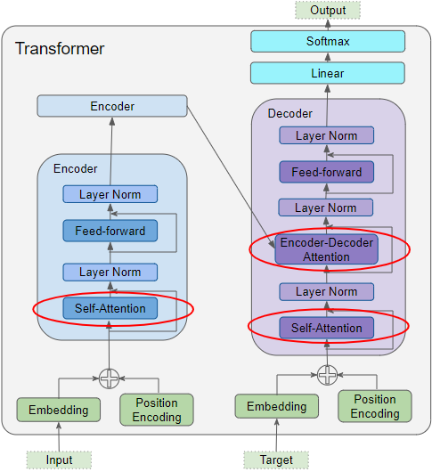

Main advancement since 2017 ?


Basics of Prompt Engineering for LLMs
Part 1: Introduction to Gen-AI
Part 2: Techniques in Prompt Engineering
Part 3: Exploring ChatGPT with Data Analytics
Closing
I am University Teacher in Statistics at the School of Mathematics, at the University of Edinburgh since 2022. Recently deserved my Fellowship of Higher Education Academics (FHEA) in 2023.


Parallelization and Efficiency
Long-Range Dependencies
Transfer Learning and Contextual Embeddings
Attention Overhead for Long Sequences
Lack of Sequential Order
Excessive Parameterization
Fixed Input Length and Inability to Handle Unstructured Inputs
Image Credit: Different development paths of LLMs
Only decoder type LLM indeed, but the output improvement relies on the concept of RLHF (Reinforcement Learning with Human Feedback)
Multimodality already for some!
As apps (ChatGPT android)
Specific: ChatGPT can see, hear and speak (’’ChatGPT can now see, hear, and speak.
Custom GPTs are released already! More recently, they released GPT store
Upcoming: “Gemini is built from the ground up for multimodality — reasoning seamlessly across text, images, video, audio, and code.”
Interaction between different LLM agents, such as Microsoft Autogen
What about available tools that we can play with ?
OpenAI: GPT-3.5 or recent version GPT4 if you have paid membership
Google: Bard now, Gemini later
Antrophic: Claude-2
Meta: Llama-2 (70B) via a specific website
Mistral: Check out their platform as open-source alternative
Recently: Microsoft Copilot is available for university! announced as Protected Mode for users from educational institutions
This is mainly about writing efficient prompts to use language models (LMs) and possible to consider it as an iterative process.
It allows us to better understand the capabilities and limitations of large language models (LLMs)
Researchers generally use prompt engineering to improve the capacity of the considered LLMs on a wide range of tasks including (but not limited) to question answering and arithmetic reasoning.
When designing and writing prompts, we typically interact with the LLM via an API or more friendly interfaceas such as ChatGPT etc.
It is crucial to know configured model parameters and how they work in general!
What about these main parameters ?
Max Length
Stop Sequences
Frequency Penalty: Penalizes repeated tokens based on frequency. Reduces word repetition in responses.
Presence Penalty: Penalizes all repeated tokens equally. Prevents phrase repetition. Adjust for creativity or focus.
Note
The general recommendation is to alter temperature or Top P but not both.
Note
Similar to temperature and Top P, the general recommendation is to alter the frequency or presence penalty but not both
Warning
Keep in mind that your results may vary depending on the which LLM or which version of LLM you use.
Prompt: What we want from LLM
Output: What we will get from the LLM
Note
A prompt can contain information like the instruction or question you are passing to the model and include other details such as context, inputs, or examples
Tip
It is possible to use such elements when they are necessary to guide the LLM more effectively, for the purpose of output improvement!
Instruction: a specific task or instruction you want the model to perform
Context: external information or additional context that can steer the model to better responses
Input Data: the input or question that we are interested to find a response for
Output Indicator the type or format of the output.
Warning
No need all the four elements for a prompt and the format depends on the task at hand.
Note
Prompt: Classify the text into neutral, negative or positive. Text: I think the food was okay. Sentiment:
Write clear instructions
Provide reference text, if we need
Split complex tasks into simpler sub-tasks
Give the model time to “think”
Use external tools or knowledge, if we need
Test changes systematically
Note
For each strategy we can see various given tactics below
This is like feeding LLM with important details or context
Ask the model to adopt a persona
Use delimiters to clearly indicate distinct parts of the input
Specify the steps required to complete a task
Use embeddings-based search to implement efficient knowledge retrieval
More technical, such as RAG method
Use code execution to perform more accurate calculations or call external APIs
Such as guiding LLM to do something with another tool!
Evaluation procedures (or “evals”) are useful for optimizing system designs
Note
More advanced prompting engineering techniques that allow us to achieve more complex tasks and improve reliability and performance of LLMs
These are some techniques from the open book of Prompt Engineering Guide. Including but not limited to,
Zero-Shot Prompting
Few-Shot Prompting
Chain-of-Thought Prompting
Generated Knowledge Prompting
PAL (Program-Aided Language Models)
Generally, LLms are capable of performing some tasks “zero-shot.” Just asking what we want simply
When zero-shot doesn’t work, it’s recommended to provide demonstrations or examples in the prompt which leads to few-shot prompting
This technique enables in-context learning where we provide demonstrations in the prompt to improve the model performance.
For more difficult tasks, we can experiment with increasing the demonstrations (e.g., 3-shot, 5-shot, 10-shot, etc.)
Warning
It is better than zero-shot to some extent but may fail especially when dealing with more complex reasoning tasks!
This method has been popularized to address more complex arithmetic, commonsense, and symbolic reasoning tasks.
Chain-of-thought (CoT) prompting enables complex reasoning capabilities through intermediate reasoning steps (Wei et al. (2022))
It is possible to combine it with few-shot prompting to get better results on more complex tasks
You can see different types such as Zero- or Few-shot COT Prompting or Automatic Chain-of-Thought (Auto-CoT)
For more complex and knowledge-intensive tasks, it’s possible to build a language model-based system that accesses external knowledge sources
This is a common and one of the cheapest option to reduce the problem of “hallucination” in general
RAG combines an information retrieval component with a text generator model.
RAG allows language models to bypass retraining, enabling access to the latest information for generating reliable outputs via retrieval-based generation
Image Credit: Langchain documentation
Image Credit: Langchain documentation
Time to see some coding
promptingguide.ai: A prompt engineering guide that demonstrates many techniques.
Brex’s Prompt Engineering Guide Brex’s introduction to language models and prompt engineering.
Please share your feedback to improve this training